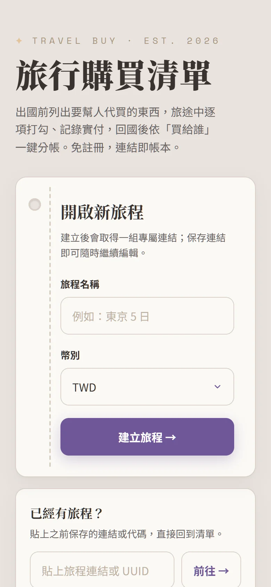
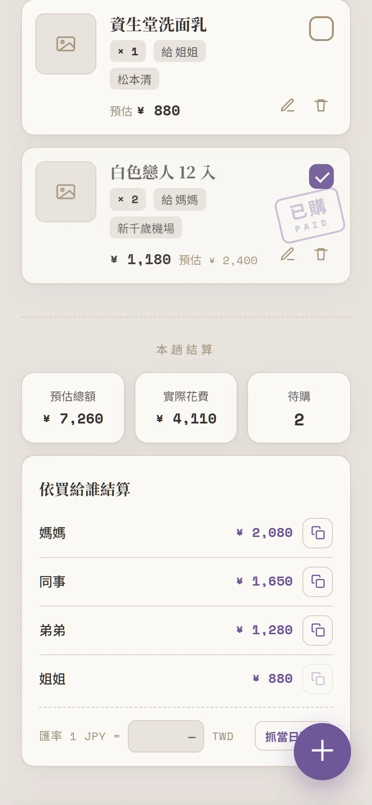

個人專案 · 全端獨立開發
Travel Purchase Manager
旅行代購管理系統 — 從前端、後端、資料庫到雲端部署，皆由個人獨立完成。免註冊，連結即帳本：出國前列代購清單、旅途中逐項打勾並記錄實付與收據、回國後依「買給誰」一鍵分帳。
解決的問題 · The Problem
不是「代購清單」，是一套完整的工程
出國幫人代買時，清單散落在群組訊息、收據拍了就找不到、回國後還得逐筆對帳分錢。這個系統把整段流程收進一個免註冊、「連結即帳本」的工具——建立清單、記錄實付與收據、再依「買給誰」自動分帳。
但對工程而言，重點不在代購本身，而在底下這套架構：React SPA、Hono REST API、自行設計的 D1 Schema 與版本遷移、R2 物件儲存，以及一條 Test → Migration → Deploy 的完整 CI/CD 管線，全部跑在 Cloudflare 邊緣運算上，前後端皆為 TypeScript。
產品畫面 · Screens
實際運行畫面



系統架構 · Architecture
單一 Edge Worker 同時服務前端與 API
一個 Cloudflare Worker 同時提供靜態 SPA 與 REST API；資料存於 D1（SQLite），收據圖片存於 R2，皆運行於 Cloudflare 的邊緣節點。
單一 Worker 同時服務前端與 API，省去獨立前端託管與跨網域設定，部署複雜度大幅降低。
自動化部署 · CI/CD
Test → Migration → Deploy 部署管線
每次 push 到 main，GitHub Actions 依序執行建置、前端測試、Worker 測試、D1 遷移，全部通過才部署到正式環境。
任何一個測試或遷移步驟失敗就中止部署——正式環境永遠只會收到通過完整測試的版本。
我負責的部分 · What I Built
全端獨立完成
- 規劃並實作 React + TypeScript 單頁式應用（SPA）的完整前端架構與路由。
- 以 Hono 建立 RESTful API，實作 Trips 與 Items 的 CRUD，並加上跨旅程的權限驗證。
- 自行設計 D1（SQLite）資料表 Schema，並完成版本化 Migration，可安全演進結構。
- 建立 GitHub Actions CI/CD：Build → 前端測試 → Worker 測試 → D1 遷移 → 部署。
- 採單一 Cloudflare Worker 同時服務 REST API 與靜態網站，降低部署複雜度。
- 實作 QR Code／Email／收據分享與代購結算；收據圖片以 R2 儲存並以短網址管理。
- 前後端全程 TypeScript，輔以 60 個自動化測試（47 前端 + 13 Worker）守護品質。
技術亮點 · Highlights
- React SPA Architecture
- RESTful API Design
- Database Schema & Migration
- Edge Computing
- Cloud-native Deployment
- CI/CD Pipeline
- Type-safe Development
※ 基於成本與隱私考量，本專案不公開線上 Demo 與原始碼；以上為實際運行畫面與架構說明。